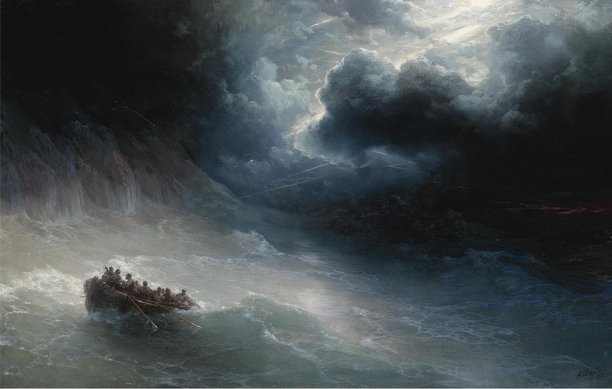
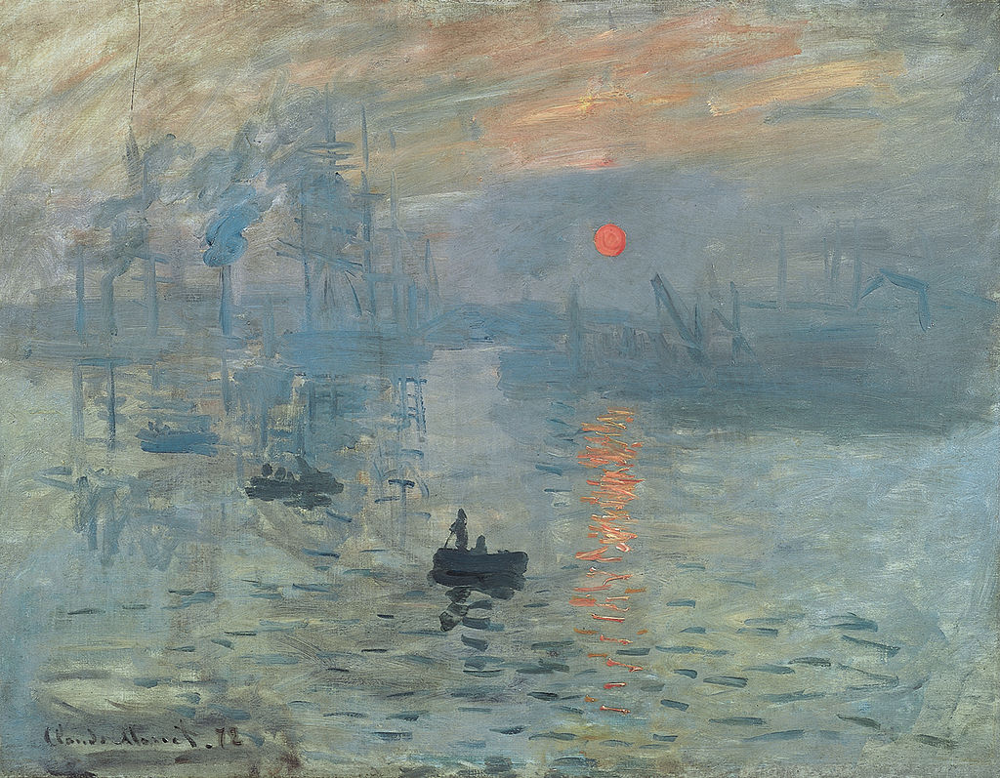

-

Гнев морей
Гнев морей — картина русского художника Ивана Константиновича Айвазовского,
написанная в 1886 году. Холст, масло.Изображено штормовое море вблизи скал,
очертания которых теряются во мраке. Бушующее море сливается с грозовым небом.
Из-за темных туч сверкают молнии. Волны бьются о высокий берег и стекают по скалам.
Атмосфера бури,гнева моря, передана особенно мощно,что зритель будто слышит грохот волн
-

Впечатление. Восходящее солнце
Впечатление. Восходящее солнце (фр. Impression, soleil levant) — картина
Клода Моне,
написанная в 1872 году с натуры в старом аванпорте Гавра
и давшая название художественному направлению «импрессионизм»
Картина написана с натуры в старом аванпорте Гавра.
В этом городе Моне вырос и впервые осознал себя художником.
Каждая секунда восхода солнца уникальна и неповторима, утверждал Моне.
-
Последний рейс корабля Отважный
Последний рейс корабля Отважный — картина английского живописца Уильяма
Тёрнера,
написанная в 1839 году. На полотне изображён последний рейс участника Трафальгарской битвы,
боевого корабля английского флота «Отважный». Паровой буксир тянет старое судно в доки,
где впоследствии оно будет разобрано. Впервые выставлена в Королевской академии художеств в 1839
году